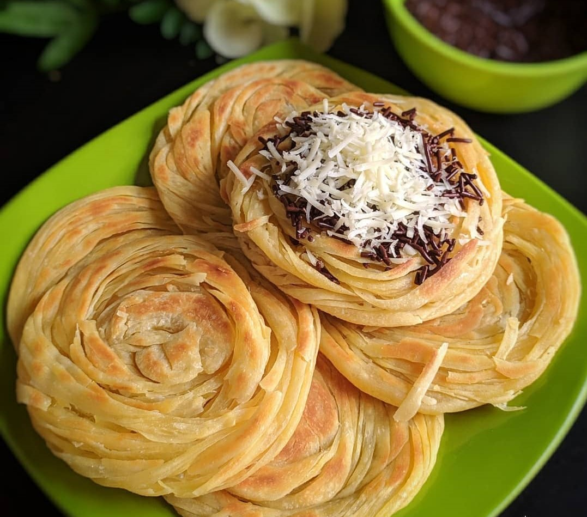

Resep Kue Maryam

Bahan yang dibutuhkan
- Tepung Terigu 600 gram (saya menggunakan tepung segitiga 200 gram dan tepung cakra 400 gram), boleh pakai cakra saja atau segitiga saja
- Telur utuh 1 butir + kuning telur 1 buah
- Garam halus 1 sendok makan
- Margarin cair 50gram
- Minyak 70ml
- Susu cair hangat 280 ml
- Margarin cair untuk bahan olesan
- Minyak untuk merendam adonan
Langkah - langkah membuat Kue Maryam
- Campur rata tepung terigu dengan garam dan gula, sisihkan.
- Dalam wadah lain campur rata susu cair, minyak goreng, margarin cair dan telur. Aduk rata dengan garpu atau whisker.
- Masukkan campuran susu ke dalam adonan tepung, aduk rata dan uleni sampai benar-benar kalis. Kalau adonannya masih keras, boleh tambahkan susu cair. Bulatkan, lalu istirahatkan adonan selama 30 menit.Tutup wadah dengan lap bersih.

- Bagi adonan menjadi beberapa bulatan kecil (saya timbang sekitar @45-50 gram), lalu rendam dalam minyak selama 1-2 jam.

- Selanjutnya ambil satu buah bulatan adonan, giling setipis mungkin tapi jangan sampai bolong-bolong.

- Oles tipis permukaannya dengan margarin atau mentega cair lalu kerat-kerat dengan pisau yang tajam dengan arah memanjang, sisakan pinggirannya jangan sampai putus. Gulung adonan yang telah dikerat-kerat tadi, setelah tergulung lalu tarik pelan-pelan dengan kedua tangan sambil sedikit dipelintir supaya adonan jadi panjang. Gulung melingkar seperti obat nyamuk, lakukan sampai adonan habis, dan diamkan selama 10 menit

- Ambil satu gulungan adonan, pipihkan pelan-pelan di atas nampan hingga adonan melebar tipis dan bulat. Tapi jangan terlalu tipis, supaya layernya cantik.

- Panggang roti di atas teflon dengan menggunakan api kecil saja sambil sesekali dibalik dan di oles margarin di kedua sisi permukaannya.

- Setelah matang, angkat dari teflon.

- Sajikan roti maryam dengan topping sesuai selera.